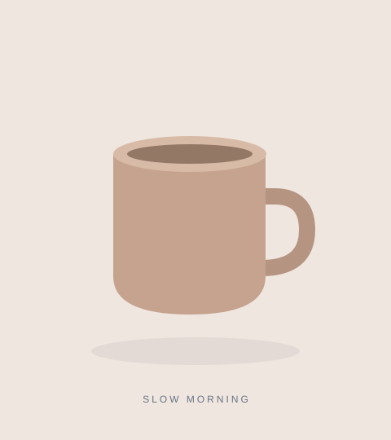

本地功能测试 · 商品页面示例轻行日常背包
轻行日常背包
把生活，轻轻装下。
简约轮廓 / 轻量设计 / 通勤灵感
¥ 199 示意价格
雾蓝日常款容量 18L
加载扩展后刷新此页，右下角将出现「获取图片」。
这是本地测试页，不是真实电商平台。
这是本地测试页，不是真实电商平台。
商品图片与提取测试素材
包含普通图片、懒加载图片、响应式图片、背景图、重复图和小图。



扫描后应得到 6 张去重后的大图；重复图不再出现，32 × 32 px 小图被排除。下载后应得到实际编码为 PNG 的文件。